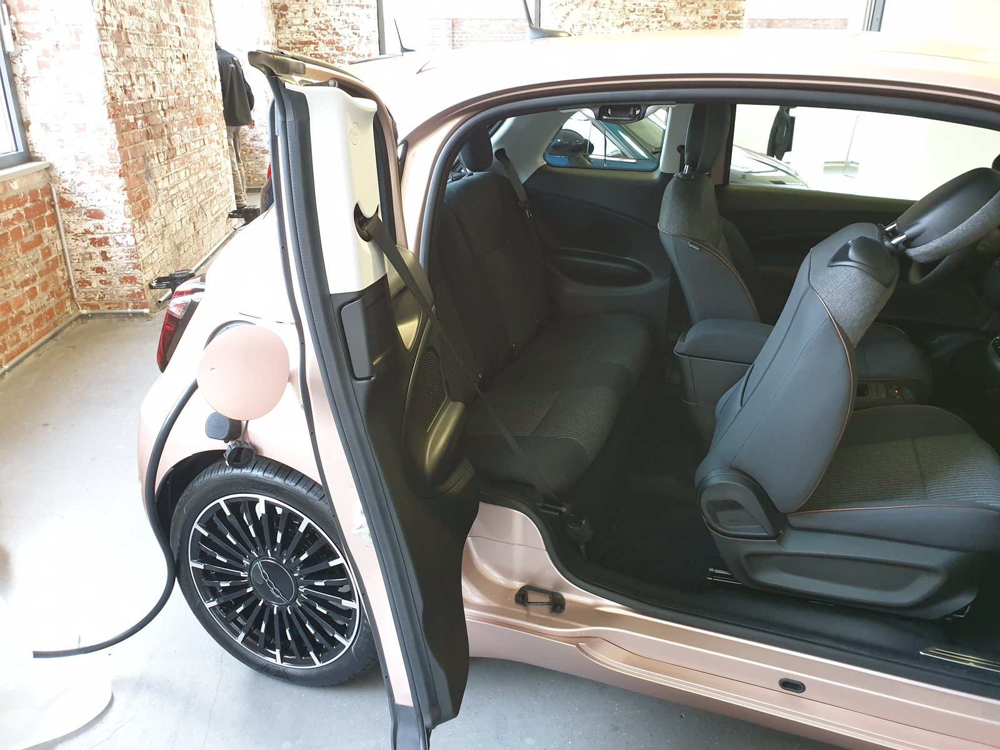

Il FTSE MIB chiude giovedì 17 settembre 2026 a 52.247 punti, in rialzo dello +0,53% rispetto alla seduta precedente, muovendosi in controtendenza rispetto alla volatilità che ha caratterizzato Wall Street nel post-FOMC (Federal Open Market Committee). I protagonisti della seduta milanese sono quattro: Moncler (+3,18%), Poste Italiane (+2,29%), Fincantieri (+2,2%) e Stellantis (+1,88%). Sullo sfondo, l'euro si rafforza sul dollaro dopo che i dati sull'inflazione dell'Area Euro sono risultati inferiori alle stime preliminari.
Perché conta: il lusso italiano — Moncler, Brunello Cucinelli, Ferrari — è uno dei settori più seguiti dagli investitori internazionali che comprano Piazza Affari. Quando un grande broker internazionale come Bernstein alza la sua valutazione, il titolo sale perché molti fondi pensione e gestori patrimoniali seguono queste raccomandazioni e ribilanciano i portafogli di conseguenza. L'upgrade di oggi segnala che le valutazioni del settore lusso potrebbero aver raggiunto il minimo dopo un anno difficile.
Moncler: l'upgrade di Bernstein a Outperform vale il 3%
La notizia del giorno a Piazza Affari è il salto di Moncler, che guadagna il +3,18% dopo che la banca d'investimento americana Bernstein ha promosso il titolo da "Market Perform" (in linea con il mercato) a "Outperform" (sovraperforma il mercato), con un prezzo obiettivo di €57,5. Bernstein motiva la promozione con tre elementi: la valutazione del titolo si è avvicinata ai minimi storici rispetto ai fondamentali, c'è un potenziale di crescita nel mercato americano — supportato dallo sviluppo del brand Grenoble — e ci sono prospettive di recupero per Stone Island, il marchio streetwear di alta gamma acquisito nel 2020.
Bernstein ha sottolineato che «una parte significativa delle cattive notizie è già riflessa nel prezzo del titolo». Moncler aveva perso circa il 17% da inizio 2026, penalizzata dal rallentamento dei consumi di lusso in Cina e dall'incertezza globale. Il recupero di oggi non cancella le sfide strutturali, ma segnala che la fase di selling (vendita) forzato potrebbe essere esaurita.
💡 Impara: Rating degli analisti — Outperform, Market Perform, Underperform
Quando un broker come Bernstein, Goldman Sachs o JPMorgan pubblica un giudizio su un titolo, usa scale diverse ma con significati simili. "Outperform" (o "Buy", "Overweight") significa che l'analista si aspetta che il titolo faccia meglio degli indici di riferimento. "Market Perform" (o "Hold", "Neutral") significa che il titolo si muoverà circa in linea con il mercato. "Underperform" (o "Sell", "Underweight") suggerisce che il titolo renderà meno degli altri. Questi giudizi muovono i prezzi perché molti fondi istituzionali seguono automaticamente le indicazioni dei grandi broker.
Le chiusure del FTSE MIB — i titoli protagonisti
| Titolo | Variazione (giornaliera) | Motivo principale |
|---|---|---|
| Moncler | +3,18% | Upgrade Bernstein a Outperform, target €57,5 |
| Poste Italiane | +2,29% | Riapertura dell'OPA (offerta pubblica d'acquisto) su TIM |
| Fincantieri | +2,2% | Ordini navali, settore difesa in crescita |
| Stellantis | +1,88% | Rimbalzo tecnico dopo settimane di debolezza |
| FTSE MIB (indice) | +0,53% | 52.247 punti in chiusura |
Poste Italiane e la corsa a TIM
Poste Italiane avanza del +2,29% nella seduta, consolidando i guadagni delle ultime settimane. La società ha annunciato che riaprirà lunedì la propria offerta su TIM (Telecom Italia — TIM), dopo il successo della prima fase dell'operazione. L'offerta di Poste per la rete consumer di TIM rappresenta uno degli sviluppi più significativi per il settore delle telecomunicazioni italiane dell'ultimo decennio, con implicazioni per milioni di abbonati domestici.
L'operazione si inserisce nel più ampio risiko (gioco di potere strategico) sulle telecomunicazioni italiane: il governo aveva avviato la separazione della rete fissa di TIM, creando la società infrastrutturale FiberCop. Poste mira ad aggiudicarsi i clienti consumer, mentre altri operatori guardano al business enterprise.
💡 Impara: OPA — Offerta Pubblica d'Acquisto
Un'OPA (in inglese: Tender Offer) è un'offerta formale con cui un'azienda o un investitore si propone di acquistare le azioni di un'altra società a un prezzo determinato — tipicamente superiore al prezzo di mercato — per un periodo limitato. Se abbastanza azionisti accettano, l'acquirente ottiene il controllo. Le OPA possono essere "amichevoli" (concordate con il management) o "ostili" (contro la volontà del management). Un'OPA fa generalmente salire il prezzo del titolo target e, spesso, scendere quello dell'acquirente (che paga un premio).
Fincantieri: la difesa navale europea traina
Fincantieri avanza del +2,2%, sostenuta dal vento favorevole del settore difesa. Il costruttore navale italiano, attivo nella costruzione di navi da guerra e navi da crociera, beneficia della crescente domanda di rinnovamento delle flotte militari europee. Nel contesto di riposizionamento strategico della NATO e di aumento dei budget per la difesa nei Paesi europei, Fincantieri si posiziona come uno dei campioni nazionali del comparto.
Euro tonico: l'inflazione eurozona sorprende al ribasso
Un fattore macro a supporto dei mercati europei nella giornata è stato il rafforzamento dell'euro. I dati sull'inflazione dell'Area Euro per agosto hanno mostrato valori inferiori alle stime preliminari, suggerendo che il processo di disinflazione (riduzione dell'inflazione) nell'Eurozona stia procedendo più rapidamente di quanto atteso. Un'inflazione europea più bassa riduce la pressione sulla BCE (Banca Centrale Europea — la banca centrale dell'Unione Monetaria Europea) di continuare ad alzare i tassi, rendendo l'euro relativamente attraente.
La divergenza tra la politica monetaria USA (Fed hawkish, tassi al 4%) e quella europea (BCE che potrebbe fermarsi prima) alimenta la volatilità nei cambi. Un euro più forte riduce il valore in euro degli utili aziendali europei realizzati all'estero — un fattore da monitorare per le multinazionali italiane con grandi ricavi in dollari.
| Indice / Asset | Valore | Var. giornaliera | Note |
|---|---|---|---|
| FTSE MIB | 52.247 | +0,53% | Milano in rialzo |
| DAX (Germania) | — | +0,29% | Francoforte in rialzo |
| CAC 40 (Francia) | — | +0,24% | Parigi in rialzo |
| Euro/Dollaro | — | tonico | Inflazione eurozona sotto stime |
📌 Da ricordare — Piazza Affari 17 settembre 2026
FTSE MIB +0,53% a 52.247 · Moncler +3,18% (Bernstein Outperform, target €57,5) · Poste +2,29% (OPA su TIM riapertura lunedì) · Fincantieri +2,2% (settore difesa) · Stellantis +1,88% · Euro tonico dopo inflazione eurozona in calo · DAX +0,29% · CAC 40 +0,24%